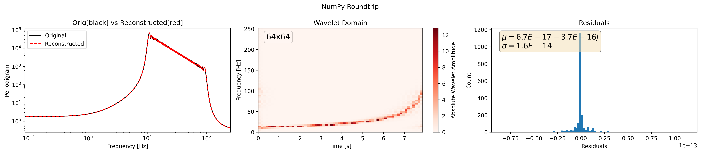
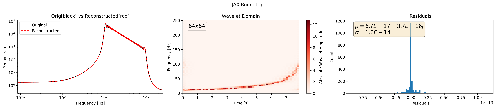
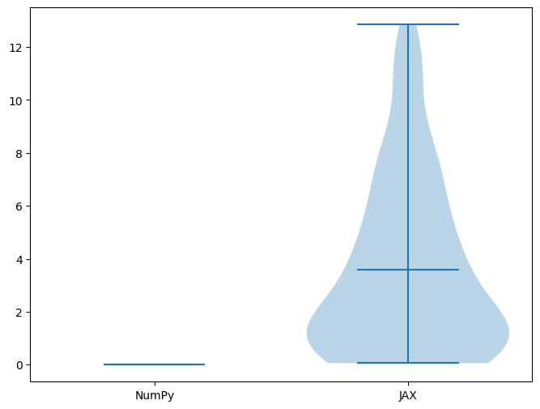
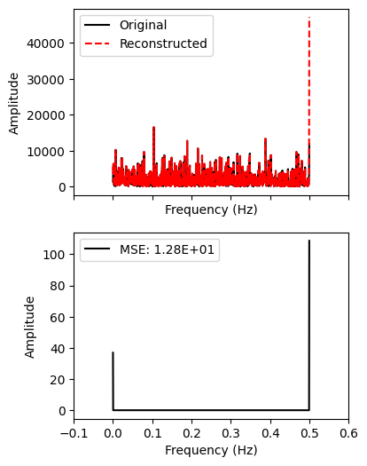

Backend comparison#
Here we plot the roundtrip of a chirp signal in the frequency domain to the wavelet domain and back to the frequency domain using different backends: NumPy, JAX, and CuPy.
! pip install pywavelet
from scipy.signal import chirp
import numpy as np
from typing import List
import matplotlib.pyplot as plt
import os
from pywavelet.types import TimeSeries, FrequencySeries
PLOT_DIR = f"backend_plots"
os.makedirs(PLOT_DIR, exist_ok=True)
def generate_chirp_time_domain_signal(
t: np.ndarray, freq_range: List[float]
) -> TimeSeries:
fs = 1 / (t[1] - t[0])
nyquist = fs / 2
fmax = max(freq_range)
assert (
fmax < nyquist
), f"f_max [{fmax:.2f} Hz] must be less than f_nyquist [{nyquist:2f} Hz]."
y = chirp(
t, f0=freq_range[0], f1=freq_range[1], t1=t[-1], method="hyperbolic"
)
return TimeSeries(data=y, time=t)
def plot_residuals(ax, residuals):
ax.hist(residuals, bins=100)
# add textbox of mean and std
mean = residuals.mean()
std = residuals.std()
textstr = f"$\mu={mean:.1E}$\n$\sigma={std:.1E}$"
props = dict(boxstyle="round", facecolor="wheat", alpha=0.5)
ax.text(
0.05,
0.95,
textstr,
transform=ax.transAxes,
fontsize=14,
verticalalignment="top",
bbox=props,
)
ax.set_xlabel("Residuals")
ax.set_ylabel("Count")
ax.ticklabel_format(axis="x", style="sci", scilimits=(0, 0))
return ax
def plot(h_freq, h_reconstructed, h_wavelet, title=None):
fig, axes = plt.subplots(1, 3, figsize=(18, 4))
_ = h_freq.plot_periodogram(ax=axes[0], color="black", label="Original")
_ = h_reconstructed.plot_periodogram(ax=axes[0], ls="--", color="red", label="Reconstructed")
_ = h_wavelet.plot(ax=axes[1], absolute=True, cmap="Reds")
_ = plot_residuals(axes[2], h_freq.data - h_reconstructed.data)
axes[0].legend()
axes[0].set_title("Orig[black] vs Reconstructed[red]")
axes[1].set_title("Wavelet Domain")
axes[2].set_title("Residuals")
if title is not None:
fig.suptitle(title)
plt.tight_layout()
# remove whitespace in 'title'
fname = title.replace(" ", "_") if title else "roundtrip"
fig.savefig(f"{PLOT_DIR}/{fname}.png", dpi=300, bbox_inches="tight")
plt.close(fig)
# Sizes
dt = 1 / 512
Nt, Nf = 2 ** 6, 2 ** 6
mult = 16
freq_range = (10, 0.2 * (1 / dt))
ND = Nt * Nf
ts = np.arange(0, ND) * dt
h_time = generate_chirp_time_domain_signal(ts, freq_range)
h_freq = h_time.to_frequencyseries()
Using NumPy
from pywavelet.transforms.numpy import from_freq_to_wavelet, from_wavelet_to_freq
h_wavelet = from_freq_to_wavelet(h_freq, Nf=Nf, Nt=Nt)
h_reconstructed = from_wavelet_to_freq(h_wavelet, dt=dt)
plot(h_freq, h_reconstructed, h_wavelet, title="NumPy Roundtrip")
Using JAX
import jax
jax.config.update("jax_enable_x64", True)
from pywavelet.transforms.jax import (
from_freq_to_wavelet as jax_from_freq_to_wavelet,
)
from pywavelet.transforms.jax import (
from_wavelet_to_freq as jax_from_wavelet_to_freq,
)
jax_h_wavelet = jax_from_freq_to_wavelet(h_freq, Nf=Nf, Nt=Nt)
jax_h_reconstructed = jax_from_wavelet_to_freq(h_wavelet, dt=dt)
plot(
h_freq, jax_h_reconstructed, jax_h_wavelet, title="JAX Roundtrip"
)
Using CuPy
from pywavelet.backend import cuda_is_available
if not cuda_is_available():
raise RuntimeError("CuPy backend is not available. Please install CuPy with CUDA support.")
from pywavelet.transforms.cupy import (
from_freq_to_wavelet as cp_from_freq_to_wavelet,
)
from pywavelet.transforms.cupy import (
from_wavelet_to_freq as cp_from_wavelet_to_freq,
)
cp_h_wavelet = cp_from_freq_to_wavelet(h_freq, Nf=Nf, Nt=Nt)
cp_h_reconstructed = cp_from_wavelet_to_freq(h_wavelet, dt=dt)
plot(h_freq, cp_h_reconstructed, cp_h_wavelet, title="CuPy Roundtrip")
---------------------------------------------------------------------------
RuntimeError Traceback (most recent call last)
Cell In[38], line 4
1 from pywavelet.backend import cuda_is_available
3 if not cuda_is_available():
----> 4 raise RuntimeError("CuPy backend is not available. Please install CuPy with CUDA support.")
6 from pywavelet.transforms.cupy import (
7 from_freq_to_wavelet as cp_from_freq_to_wavelet,
8 )
9 from pywavelet.transforms.cupy import (
10 from_wavelet_to_freq as cp_from_wavelet_to_freq,
11 )
RuntimeError: CuPy backend is not available. Please install CuPy with CUDA support.
Backend |
Roundtrip Plot |
|---|---|
NumPy |
 |
JAX |
 |
CuPy |
|

Noise robustness#
import numpy as np
from pywavelet.types import TimeSeries, FrequencySeries
np.random.seed(42) # For reproducibility
def generate_white_noise(N: int = 2048, scale: float = 1.0) -> FrequencySeries:
"""Generate white noise time series."""
noise = np.random.normal(0, scale, N)
return TimeSeries(data=noise, time=np.arange(N)).to_frequencyseries()
datasets = [generate_white_noise() for _ in range(100)]
def get_residuals(datasets, forward_transform, inverse_transform, Nf=32):
mse = np.zeros(len(datasets))
for i, h_freq in enumerate(datasets):
h_wavelet = forward_transform(h_freq, Nf=Nf)
h_reconstructed = inverse_transform(h_wavelet, dt=h_time.dt)
mse[i] = get_mse(h_freq, h_reconstructed)
return mse
def get_mse(f1, f2):
"""Calculate Mean Squared Error between two frequency series."""
return float(np.mean(np.abs(f1.data - f2.data) ** 2))
numpy_mses = get_residuals(
datasets,
from_freq_to_wavelet,
from_wavelet_to_freq
)
jax_mses = get_residuals(
datasets,
jax_from_freq_to_wavelet,
jax_from_wavelet_to_freq
)
if cuda_is_available():
from pywavelet.transforms.cupy import (
from_freq_to_wavelet as cp_from_freq_to_wavelet,
)
from pywavelet.transforms.cupy import (
from_wavelet_to_freq as cp_from_wavelet_to_freq,
)
cp_mses = get_residuals(
datasets,
cp_from_freq_to_wavelet,
cp_from_wavelet_to_freq
)
else:
cp_mses = None
# violin plot of MSEs
import matplotlib.pyplot as plt
fig, ax = plt.subplots(figsize=(8, 6))
ax.violinplot(
[numpy_mses, jax_mses] + ([cp_mses] if cp_mses is not None else []),
showmeans=True,
showextrema=True,
widths=0.8
)
ax.set_xticks([1, 2] + ([3] if cp_mses is not None else []))
ax.set_xticklabels(
["NumPy", "JAX"] + (["CuPy"] if cp_mses is not None else [])
)
[Text(1, 0, 'NumPy'), Text(2, 0, 'JAX')]

# get max idx of jax_mses
max_idx = int(np.argmax(jax_mses))
Nf = 32
hfreq = datasets[max_idx]
wnm = from_freq_to_wavelet(hfreq, Nf=Nf)
hrecon = from_wavelet_to_freq(wnm, dt=hfreq.dt)
plot(
hfreq, hrecon, wnm, title="White Noise Roundtrip (NumPy)"
)
get_mse(hfreq, hrecon) # Print MSE for NumPy roundtrip
1.6673454742985615e-28
wnm_jax = jax_from_freq_to_wavelet(hfreq, Nf=Nf)
hrecon_jax = jax_from_wavelet_to_freq(wnm_jax, dt=hfreq.dt)
plot(
hfreq, hrecon_jax, wnm_jax, title="White Noise Roundtrip (Jax)"
)
print(get_mse(hfreq, hrecon_jax)) # Print MSE for JAX roundtrip
print("expected MSE for jax roundtrip:", jax_mses[max_idx])
12.848047201614534
expected MSE for jax roundtrip: 12.848047201614534
fig, ax = plt.subplots(2, 1, figsize=(4, 6), sharex=True)
hfreq.plot_periodogram(ax=ax[0], color="black", label="Original")
hrecon_jax.plot_periodogram(ax=ax[0], ls="--", color="red", label="Reconstructed")
ax[0].set_xscale("linear")
ax[0].set_xlim(-0.1, 0.6)
ax[0].legend()
resid = np.abs(hfreq.data - hrecon_jax.data)
mse = np.mean(resid ** 2)
ax[1].plot(hfreq.freq, resid, label=f"MSE: {mse:.2E}", color="black")
ax[1].legend()
for a in ax:
a.set_xlabel("Frequency (Hz)")
a.set_ylabel("Amplitude")
a.set_xscale("linear")
a.set_yscale("linear")

jax_mses
array([ 7.1784282 , 0.3412282 , 6.3819535 , 1.2144013 , 0.27462733,
0.69190458, 3.96882098, 1.15552238, 8.02882568, 0.54390046,
4.83262299, 0.84444492, 2.00600982, 4.17576642, 2.29021299,
7.46416844, 1.16827308, 1.69226423, 6.89086171, 11.26142015,
5.04840592, 2.44840229, 0.56005081, 1.68539507, 0.50346409,
3.09320849, 1.54600895, 5.47859933, 0.71958427, 7.82962478,
5.364825 , 5.10632507, 4.00478622, 1.29929241, 9.06782523,
12.8480472 , 3.02445406, 3.57816182, 2.71404353, 6.5743191 ,
0.72477852, 2.02846712, 0.71753285, 0.51137052, 0.70260112,
0.79245948, 0.70608546, 8.537481 , 3.36002486, 0.24922118,
2.01446913, 6.55748283, 10.42802756, 5.46988332, 1.17754993,
8.85866947, 1.11015473, 1.13743951, 4.99735251, 0.17427547,
3.44563637, 4.06446234, 1.89372023, 1.29761254, 0.77087475,
5.84211759, 0.29049541, 3.08546068, 0.91993828, 10.99750455,
3.82647106, 0.25508863, 11.41751324, 3.86489681, 1.49654306,
8.4393253 , 11.77574303, 1.44347973, 7.31852572, 2.78561988,
6.13839499, 0.33803385, 0.23393697, 0.224426 , 0.19214557,
2.78211587, 3.58015464, 7.8736174 , 0.15675548, 4.24489568,
0.96985675, 11.70232291, 1.36950606, 1.34719813, 4.78999754,
4.02200797, 0.47775533, 0.0580099 , 6.84594453, 1.96714212])
numpy_mses
array([1.56234228e-28, 1.57258746e-28, 1.66723035e-28, 1.76215346e-28,
1.53404667e-28, 1.56837822e-28, 1.65632604e-28, 1.54706616e-28,
1.65438593e-28, 1.63811294e-28, 1.54475179e-28, 1.54724007e-28,
1.58555311e-28, 1.59483637e-28, 1.69603676e-28, 1.64195609e-28,
1.81804776e-28, 1.61780505e-28, 1.47562665e-28, 1.50028632e-28,
1.79575605e-28, 1.42717436e-28, 1.72361064e-28, 1.74955585e-28,
1.63744149e-28, 1.56012651e-28, 1.61206537e-28, 1.68867588e-28,
1.56898742e-28, 1.76253080e-28, 1.56226684e-28, 1.46729010e-28,
1.41967929e-28, 1.47546484e-28, 1.55150127e-28, 1.66734547e-28,
1.72207730e-28, 1.67879112e-28, 1.64378918e-28, 1.60704920e-28,
1.60854996e-28, 1.51156163e-28, 1.69385802e-28, 1.54280096e-28,
1.51715712e-28, 1.62576714e-28, 1.68348320e-28, 1.56597293e-28,
1.61650211e-28, 1.50736414e-28, 1.73829863e-28, 1.54307886e-28,
1.71383423e-28, 1.59127406e-28, 1.52755456e-28, 1.49468120e-28,
1.63545586e-28, 1.56548607e-28, 1.75022376e-28, 1.58873796e-28,
1.56484364e-28, 1.56518385e-28, 1.62562278e-28, 1.47225198e-28,
1.61673487e-28, 1.62825064e-28, 1.61562490e-28, 1.56939615e-28,
1.61364722e-28, 1.58034165e-28, 1.53881588e-28, 1.53169516e-28,
1.48258314e-28, 1.53894260e-28, 1.65770833e-28, 1.52322429e-28,
1.56470284e-28, 1.57572916e-28, 1.52370007e-28, 1.58665344e-28,
1.51740639e-28, 1.62929681e-28, 1.48518210e-28, 1.66369574e-28,
1.57135381e-28, 1.66025900e-28, 1.56898502e-28, 1.54414182e-28,
1.55052175e-28, 1.65289556e-28, 1.60333753e-28, 1.67697215e-28,
1.55616480e-28, 1.64529068e-28, 1.54766212e-28, 1.60022160e-28,
1.55711390e-28, 1.50126363e-28, 1.65463629e-28, 1.58123941e-28])